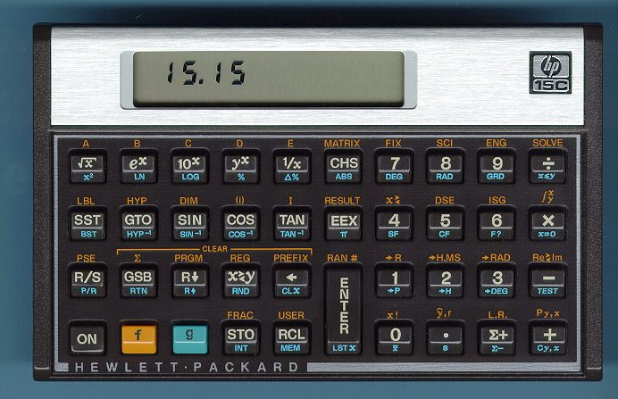

Eigenmath is available on the Mac App Store
▹Demo 1
(Read about how Planck calculated h and k)
▹Demo 2
(Read about how Einstein derived Planck's law)
▹Demo 3
Draw some graphs
▹Demo 4
Blank form
Documentation
Eigenmath Manual
Quick Reference
Additional Resources
Compton Scattering
▹Verify Casimir trick
(Safari recommended, click through alerts on other browsers)
▹Verify momentum formulas
▹Verify lab frame formulas
▹Draw angular distributions
▹Compton scattering data from CERN LEP
(R² = 0.97)
Rutherford Scattering
▹Verify Casimir trick
▹Verify probability density
▹Draw probability density
Bhabha Scattering
▹Verify Casimir trick
▹Verify momentum formulas
▹Draw angular distribution
▹Bhabha scattering data from SLAC SPEAR
(R² = 0.99)
▹Bhabha scattering data from DESY PETRA
(R² = 0.99)
Moller Scattering
moller-scattering-1.txt
moller-scattering-2.txt
moller-scattering-3.txt
Annihilation
annihilation-1.txt
annihilation-2.txt
annihilation-3.txt
(DESY PETRA, R² = 0.98)
annihilation-4.txt
Muon Production
muon-production-1.txt
muon-production-2.txt
muon-production-3.txt
(SLAC PEP, R² = 0.87)
muon-production-4.txt
(SLAC PEP, R² = 0.98)
muon-production-5.txt
Angular momentum
▹Commutation relations
▹Associated Legendre functions
▹Spherical harmonic eigenfunctions
▹Linear combinations
Hydrogen atom
▹Bohr radius and Rydberg unit of energy
▹Radial eigenfunctions
▹Normalization
▹Draw radial probability densities
▹Complete solution
Electron spin
▹Expectation values
▹Commutation relations
Fermion operators
Anticommutation
▹Demo
Wavefunction operator
▹Demo
Position operator
▹Demo
Exchange energy
▹Demo
Energy matrix
▹Demo
Superposition of eigenstates
▹Demo
Quantum computing
▹Bell state
▹Deutsch-Jozsa algorithm
Notes
LEP was the Large Electron Positron collider at CERN in Geneva, Switzerland.
PEP was the Positron Electron Project collider at the Stanford Linear Accelerator Center (SLAC) in Menlo Park, California.
PETRA was the Positron Electron Tandem Ring Accelerator at DESY in Hamburg, Germany.
SPEAR was the Stanford Positron Electron Asymmetric Ring collider at SLAC.
R² is coefficient of determination, a statistic that measures the predictive accuracy of a mathematical model.
To run Eigenmath in a terminal window, download eigenmath.c and follow the build instructions.
See also github.
Please send bug reports to yo73137@gmail.com

Image of HP-15C, the most beautiful calculator ever made and an inspiration for Eigenmath.